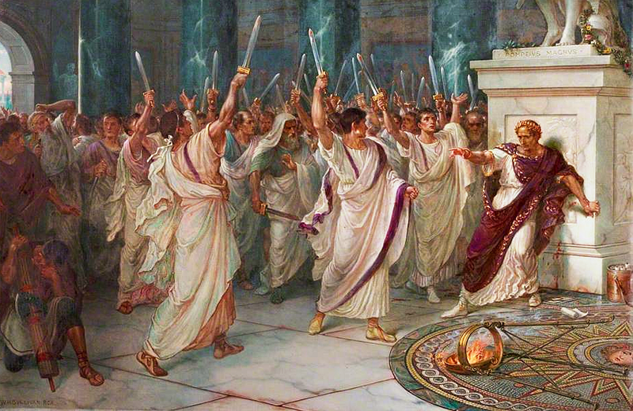

“Violence can destroy power; it is utterly incapable of creating it.”
— Hannah Arendt, On Violence (1970)
This shows exactly the reason why political violence is illogical...
Circa 44 BC (BCE), Julius Caesar is assassinated...
The assassination of Julius Caesar, and the events leading up to it...
When all is said and done, political violence is never a solution...